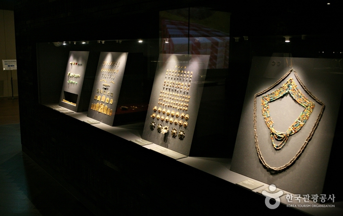
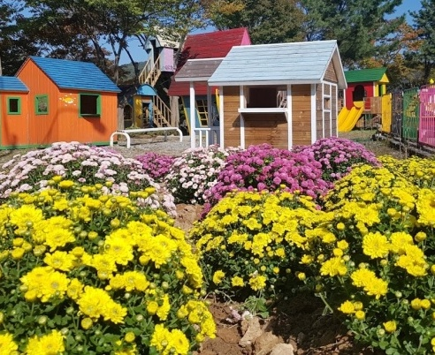
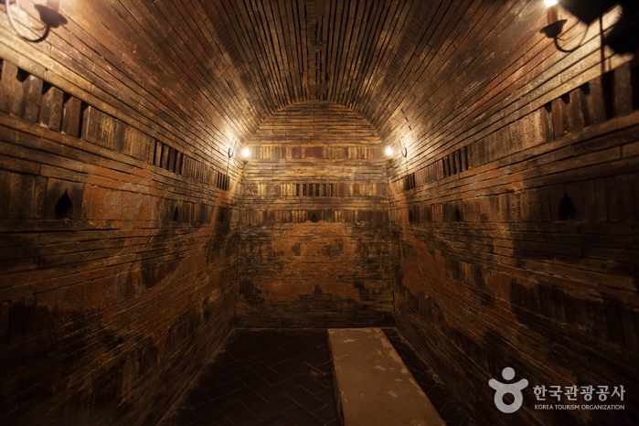
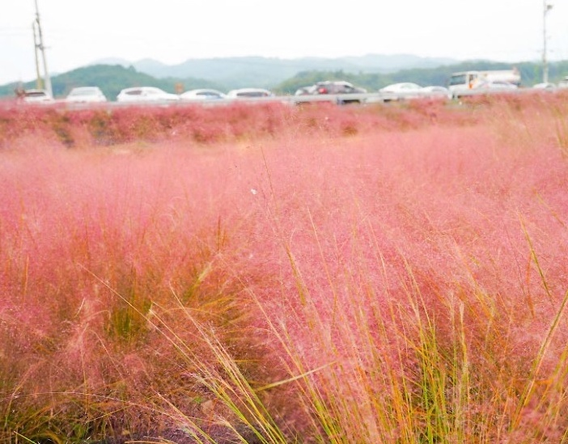
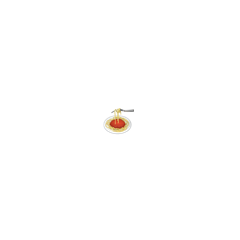

주요 관광지
-

국립공주박물관
국립공주박물관은 웅진백제시대의 문화를 주제로 하는 박물관으로서 웅진백제의 문화를 재조명하고 국민들에게 문화공간을 제공하기 위해 설립되었다. 공주를 비롯한 충청 남·북부 지역에서 출토된 많은 발견·발굴 매장 문화재를 체계적인 방법으로 보관 관리하고 학술적 가치가 높은 중요 유물은 관람객과 전문 연구자들이 쉽게 살펴볼 수 있도록 전시되어 있다.
-

이안숲속
26만여㎡ 부지에 꽃축제를 비롯하여, 어린이동물원, 허브마을, 잉꼬체험관, 인공동굴천지관, 공룡랜드, 사계절썰매장 등의 시설을 갖춘 자연테마공원으로 운영되고 있다. 텐트, 목조펜션 등 숙박시설도 갖추고 있으며 다양한 어린이 체험프로그램도 운영하고 있다.
입장료 | 8,000원
-

공주 무령왕릉과 왕릉원
공주시 금성동에 있는 웅진 백제시대 왕들의 무덤이 모여있는 곳이다. 무령왕릉을 포함한 이 일대의 고분들은 모두 7기가 전해지는데, 송산을 주산으로 뻗은 구릉 중턱의 남쪽 경사면에 위치한다.
입장료 | 어른 1,500원 청소년 1,000원 어린이 700원 -

유구천 핑크뮬리
핑크뮬리와 함께 코키아를 보며 어린이들과 자연을 느낄 수 있는 가족 친화적인 장소다. 찰랑거리는 가을 바람과 팔랑거리는 핑크뮬리에 근심 걱정을 실어 보낼 힐링 장소로 유명하다.
맛집 및 카페
-

귀연당
한식
주소 | 충남 공주시 의당면 의당로 981 월곡리 289-1 번지 -

라루체
양식
주소 | 충남 공주시 반포면 계룡대로 1392 -

카페 보니비
카페
주소 | 충남 공주시 반포면 정광터1길 164-3